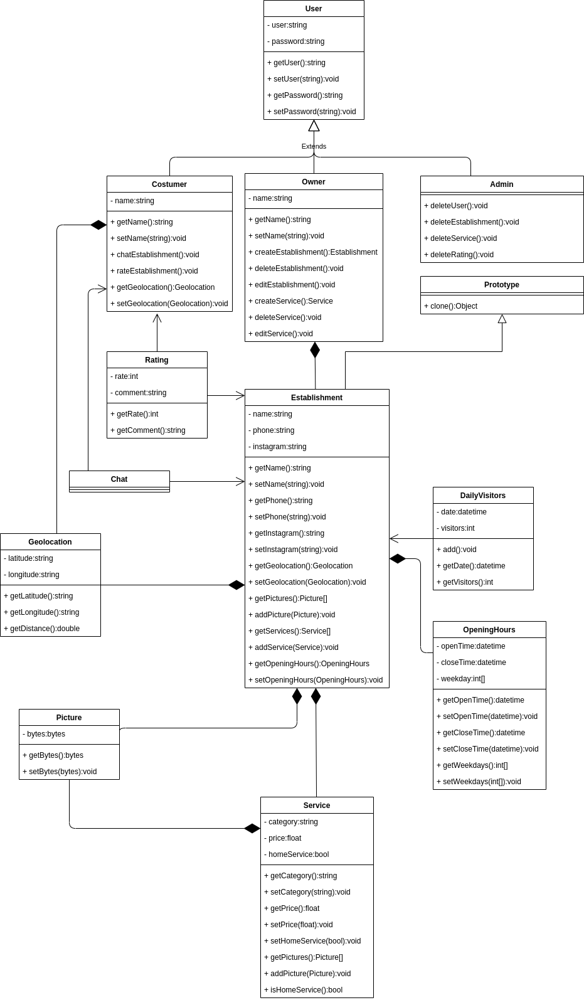

GoFs Criacionais
1. Introdução
Os padrões de projeto criacionais abstraem o proceso de instanciação do objeto. Eles ajudam a fazer o sistema independente na maneira em que são criados, compostos e representados. Em outras palavras esse padrões se concentram em oferecer soluções para problemas recorrentes principalmente na criação/instanciação de objetos.
A seguir iremos apresentar os principais padrões criacionais e como eles se aplicam o projeto, explicando também o problema/solução. Será apresentado também os casos em que os padrões não serão aplicados e o motivo.
2. Factory Method
O factory method (método de fábrica) consiste no instanciamento de um produto concreto que usa uma interface, por exemplo, uma aplicação que requer um objeto com uma interface específica para realizar as tarefas.
Em termos práticos é uma criação de uma classe que será fábrica de um determinando produto. Exixtem duas implementações encontrada: a primeira é uma fábrica concreta para todos as classes que implementam uma interface e a segunda é uma fábrica para cada produto que implementa a interface. Enquanto a primeira seja mais simples de ser implementada, apenas a segunda atende o principio do open/close.
Estrutura
- É declarada uma interface, que é comum a todos os objetos que podem ser produzidos pelo criador pelo criador e suas subclasses.
- Em seguida as classes criadas serão implementações dessa interface.
- A classe Criadora declara o método fábrica que retorna novos objetos produto, e logo após retornando o resultado para a interface.
- As classes criadoras filhas sobrescrevem o método fábrica da Criadora, logo após retornando um tipo diferente de produto.
2.1. Vantagens
- Poder facilmente adicionar mais produtos concretos que utilizam a mesma interface.
- Evitar um alto grau de acoplamento no código.
- Obedece ao princípio da responsabilidade única.
2.2. Desvantagens
- Caso seu uso seja excessivo pode acarretar a um grande número de subclasses e de arquivos dentro do software.
2.3. Aplicação no projeto
Na nossa aplicação irá existir três tipos de usuários: Admin, Owner e Costumer. Dado essa situação, a equipe decidiu por aplicar o factory method por facilitará o instanciamento dessas classes. Esse três tipos de usuários serão classes que herdarão de uma classe User possibilitando a aplicação desse padrão de projeto.
A implementação em código seria, por exemplo:
from abc import ABC, abstractmethod
class UserFactory(ABC):
@abstractmethod
def getUser(self, username, password):
pass
class AdminFactory(UserFactory):
def getUser(self, username, password) -> User:
return Admin(username, password)
class CustomerFactory(UserFactory):
def getUser(self, username, password, name) -> User:
return Customer(username, password, name)
class OwnerFactory(UserFactory):
def getUser(self, username, password, name) -> User:
return Owner(username, password, name)
3. Builder
O padrão de projeto Builder tem como objetivo separar a construção de objetos complexos da sua representação de modo que o mesmo processo de construção pode criar várias representações.
Seu funcionamento começa na classe Director que possui o método que chama o ConcrectBuilder específico, de acordo com os parâmetros especificados. Essa classe não é essencial nesse padrão, mas é importante. Outra parte desse processo são as classes Builders; a primeira é uma classe abstrata que declara os métodos que devem ser implementados por um ConcrectBuilder; esta classe é uma classe concreta que implementa os métodos necessários para a construção do produto e, por fim, a classe Product é o resutado da construção implementada no ConcrectBuilder. Tendo em vista esse processo, ess padrão de projeto é vantajoso somente se o processo de contrução do produto em sí é muito complexo, sendo necessário a separação de responsabilidades entre as classes.
Estrutura
- A interface Builder declara etapas de construção do produto que são comuns a todos os tipos de de builders.
- Os Builders Concretos trazem diferentes implementações das etapas de construção. Builders Concretos podem produzir podem produzir produtos que não seguem a interface comum.
- Os Produtos são objetos resultantes. Produtos construídos pode diferentes builders não precisam pertencer a mesma interface ou hierarquia da classe.
- Uma classe chamada Diretor define a ordem na qual as etapas de construção são chamadas, então você pode criar e reutilizar configurações específicas de produtos.
- Uma classe Cliente deve associas um dos objetos builders como o construtor do Diretor. Geralmente isso é feito apenas uma vez, através de parâmetros do construtor do diretor. O Diretor então usa aquele objeto builder para todas as futuras construções.
3.1. Vantagens
- Pode-se usar a mesma construção para diversas representações do produto. Em outras palavras favorece a reusabilidade do código.
- Pelo princípio da única responsabilidade, é separado a responsabilidade de construir o objeto de quem o usa.
- É possível criar uma construção de um objeto em etapas.
- Entrega um maior controle sobre a construção de um objeto.
3.2. Desvantagens
- Aumenta a complexidade do código, ja que esse padrão requer a criação de múltiplas classes.
- Requer que a classe Builder seja mutável.
3.3. Aplicação no projeto
Todas as classes do projeto não têm mais de 4 atributos que necessitam ser inicializados junto ao objeto, oque torna a criação da maioria das classes simples ao ponto de o padrão de projeto builder se tornar desisteressante. Há apenas uma classe que pode ser usada para aplicar o método Builder que é a OpeningHours, ja que os horários de abertura e fechamento estão em um formato específico e cada dia da semana tem um próprio funcionamento; atualmente a responsabilidade para contrução desse objeto é da própria classe Opening Hours.
4. Singleton
Garante que uma classe tenha apenas uma instância em todo o código e oferece um ponto de acesso global para essa classe. Em outras palavras, esse padrão é usada para quando precisa de uma classe de acesso global no código, garantindo apenas uma instância.
Para isso é necessário a implementação de uma classe que irá ser a variável global e em caso de multithreading irá controlar também o acesso, sob risco de criar novas instâncias.
Estrutura
- A classe Singleton declara o método estático getInstancia que retorna a mesma instância de sua classe. O construtor da singleton deve ser escondido do código client. Chamando o método getInstancia deve ser o único modo de obter o objeto singleton.
4.1. Vantagens
- Controla o acesso a essa instância.
- Facilidade em permitir um maior número de instâncias (Multiton);
- Substitui variáveis globais.
4.2. Desvantagens
- É mais difícil de testar, visto que várias partes do código alteram essa classe.
- Viola o princípio de responsabilidade única
- Requer tratamento especial em caso de concorrência.
- Em [5] O próprio autor fala que esse é o único padrão de projeto que ele retiraria em uma refatoração do livro.
4.3. Aplicação no projeto
Dentro da nossa modelagem, a principal classe que pode ser usada o padrão singleton é são as classes que geram autenticação: Costumer, Owner e Admin. Como elas podem ser acessadas de várias parte do código, então são as favoritas para serem aplicadas os padrões de projeto.
5. Multiton
Esse padrão é apenas uma generalização do Singleton sendo que este autoriza apenas uma instância, enquanto o Multiton permite uma quantidade controlada de instâncias.
5.1. Vantagens
- Controla o acesso a várias instâncias.
- Substitui variáveis globais.
5.2. Desvantagens
- É mais difícil de testar, visto que várias partes do código alteram essa classe.
- Viola o princípio de responsabilidade única
- Requer tratamento especial em caso de concorrência.
5.3. Aplicação no projeto
Assim como o singleton o escopo atual não permite o uso desse padrão de forma se tornar vantajoso ao sistema. Por outro lado, assim como o singleton, na ferramenta usada no ReactJS, que é o framework que será usado no frontend, há a aparição do padrão de projeto singleton/multiton no uso do Context API.
6. Object poll
Esse padrão permite uma boa economia de performace e sendo usado principalmente em casos em que o custo do instaciamento de uma classe é bem pesado. Seu fucionamento se baseia no armazenamento de classes que não estão sendo usadas e não destruindo-as podem ser usadas posteriormente. Um exemplo clássico de seu uso são de classes que precisam ser renderizadas em games; ao invés de destruir, a classe é armazenada para ser usada posteriormente, assim, o programa não precisa renderizar tudo novamente.
6.1. Vantagens
- Alta economia de desempenho.
6.2. Desvantagens
- Uso de memória alto a depender da situação.
6.3. Aplicação no projeto
O Object pool se mostra vantajoso quando quando existem classes que demandam tempo e processamento para serem instanciadas. Essa condição não se aplica ao projeto, visto que a implementação das atuais classes não são pesadas em questão de performance.
7. Abstract factory
É um padrão que é usado no instanciamento de familias de objetos que possuem categorias em comum. É criada uma classe abstrata factory e para cada categoria é criada uma classe concreta implementando a factory abstrata. Cada classe concreta dessas é responsável pelo instanciamento de classes de uma mesma categoria, mas de famílias diferentes.
Estrutura
- Produtos Abstratos declaram interfaces para um conjunto de produtos distintos mas relacionados que fazem parte de uma família de produtos.
- Produtos Concretos são várias implementações de produtos abstratos, agrupados por variantes. Cada produto abstrato deve ser implementado em todas as variantes dadas.
- A interface Fabrica Abstrata declara um conjunto de métodos para a criação de cada um dos produtos abstratos.
- Fábricas Concretas implementam métodos de criação fábricas abstratas. Cada fábrica concreta corresponde a uma variante específica de produtos e cria apenas aquelas variantes de produto.
- Embora fábricas concretas instanciam produtos concretos, assinaturas dos seus métodos de criação devem retornar produtos abstratos correspondentes.
7.1. Vantagens
- Aplicação do princípio Open/Closed Principle.
- Aplicação do princípio da responsabilidade única.
- Os produtos sao compatíveis entre si.
7.2. Desvantagens
- Adiciona bastante complexidade ao código.
7.3. Aplicação no projeto
A modelagem do nosso projeto não possui o principal ponto do abstract factory que é famílias de classes que podem ter categorias em comum. Como veremos a seguir, a nossa modelagem possui apenas uma família de classes, o que inviabiliza o uso da abstract factory.
8. Prototype
Esse padrão cria um novo objeto a partir de uma cópia de um objeto já existente. Isso evita muito processamento de instaciamento de classes, em caso de classes complexas.
Estrutura
- A interface Protótipo declara os métodos de clonagem. Na maioria dos casos é apenas um método clonar.
- A classe Protótipo Concreta implementa o método de clonagem. Além de copiar os dados do objeto original para o clone, esses métodos também podem lidar com alguns casos específicos do processo de clonagem relacionados a colnar objetos ligados, desfazendo dependências recursivas, etc.
- O Client pode, no caso, produzir uma cópia de qualquer objeto que segue a interface do produto.
8.1. Vantagens
- Oculta as classes concretas do código cliente.
- Ajuda na criação de objetos caros/complexos
- Evita a explosão de subclasses.
8.2. Desvantagens
- Clonar objetos que tem referências a outros objetos pode ser complexo.
8.3. Aplicação no projeto
Esse padrão será aplicado no projeto na classe Establishment, pois é uma das classes mais complexas do projeto e esse padrão pode ajudar quando o usuário quer criar um novo estabelecimento a partir de um já existente, aproveitando a maior parte das informações. Pensando nisso é melhor usar um objeto existente e fazer uma cópia do que instanciar e inicializar do zero.
A implementação em código seria, por exemplo:
import copy
class Prototype:
def clone(self) -> Establishment:
pass
class Establishment(Prototype):
...
def clone(self) -> Establishment:
return copy.copy(self)
9. Conclusão:
Aqui está a versão final da modelagem do projeto:
Versão 1.0

Versão 2.0

10. Referências
[1] - GAMMA, Erich; HELM, Richard; JOHNSON, Ralph; VLISSIDES, John. Design Patterns: Elements of Reusable Object-Oriented Software. Indianapolis: [s. n.], 1994. [2] - FACTORY method: Python Design Patterns. Disponível em: https://www.geeksforgeeks.org/factory-method-python-design-patterns/. Acesso em: 31 mar. 2021. [3] - Builder method: Python design patterns. Disponível em: https://www.geeksforgeeks.org/builder-method-python-design-patterns/. Acesso em 31 mar. 2021. [4] - Singleton design pattern: Implementation. Disponível em: https://www.geeksforgeeks.org/singleton-design-pattern/. Acesso em: 31 mar. 2021. [5] - Design Patterns 15 Years Later: An Interview with Erich Gamma, Richard Helm, and Ralph Johnson. Disponível em: https://www.informit.com/articles/article.aspx?p=1404056. Acesso em 31 mar. 2021. [6] - Multiton pattern. Disponível em: https://en.wikipedia.org/wiki/Multiton_pattern. Acesso em 1 abr. 2021. [7] - Object pool: Design pattern. Disponível em: https://sourcemaking.com/design_patterns/object_pool. Acesso em 1 abr. 2021. [8] - Obejct pool pattern. Disponível em: https://en.wikipedia.org/wiki/Object_pool_pattern. Acesso em 1 abr.2021.
11. Versionamento
| Data | Nome | Detalhes | Versão |
|---|---|---|---|
| 31/03/2021 | João Pedro Carvalho | Adicionando factory methodo e iniciando o documento | 0.1 |
| 31/03/2021 | João Pedro Carvalho | Adicionando builder | 0.2 |
| 31/03/2021 | João Pedro Carvalho | Adicionando singleton | 0.3 |
| 01/04/2021 | João Pedro Carvalho | Adicionando multiton e object pool | 0.4 |
| 01/04/2021 | João Pedro Carvalho | Adicionando abstract factory e prototype | 0.5 |
| 02/04/2021 | João Luis Baraky | Corrige erros de ortografia | 0.6 |
| 02/04/2021 | João Luis Baraky | Adiciona Factory Method à modelagem (v2) | 0.7 |
| 03/04/2021 | João Pedro Carvalho | Adicionando justificativa para factory method | 1.0 |
| 04/04/2021 | Hugo, Wagner, Nícalo | Revisão do Documento | 1.1 |
| 04/04/2021 | Hugo, Wagner, Nícalo | Revisão do Documento | 1.0 |
| 09/04/2021 | Hugo Aragão | Adiciona Estrutura Factory | 1.1 |
| 09/04/2021 | Hugo Aragão | Adiciona Estrutura Singleton e Builder | 1.2 |
| 09/04/2021 | Hugo Aragão | Adiciona Estrutura Prototype e Abstract Factory | 1.3 |
| 09/04/2021 | João Luis Baraky e Joao Pedro Carvalho | Adiciona códigos da implementação do factory method e prototype | 2.0 |